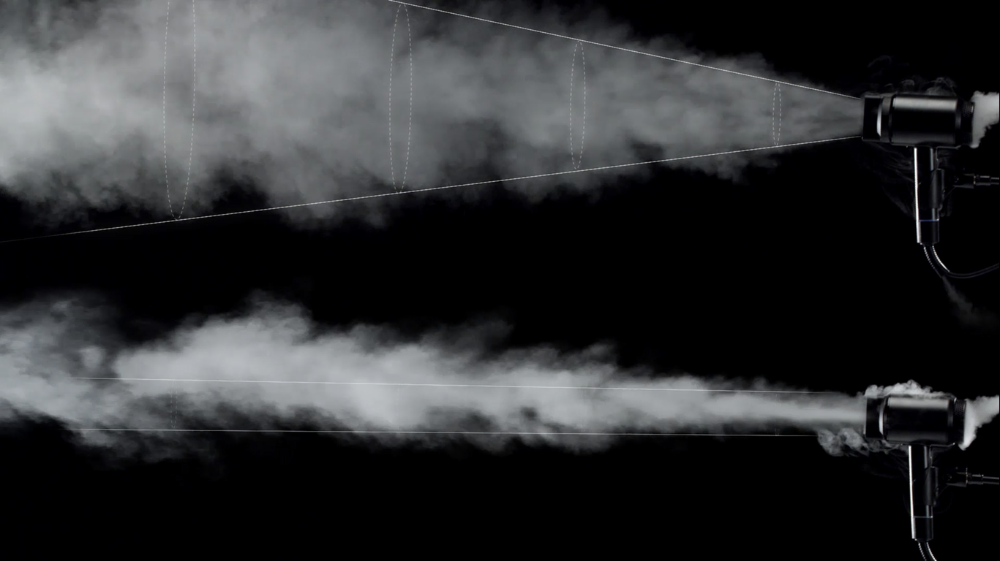

ФЕН D 710
Компактное решение для профессионального стайлинга с универсальной насадкой для сушки и укладки.
БЫСТРАЯ И КАЧЕСТВЕННАЯ СУШКА ВОЛОС
Высушивание волос - это всегда комбинация температуры и мощности воздушного потока. Мощный инновационный цифровой мотор и аэродинамическая конструкция корпуса обеспечивают идеальное качество сушки волос, значительно сокращая время высыхания волос и повышая эффективность воздействия на кожу головы.
СИСТЕМА PLASMA STREAM
Перегрев. Расчесывание. Использование средств для укладки и окрашивание, могут нанести невидимый, но при этом необратимый ущерб. Только изучив все о волосах, мы смогли создать совершенно иной фен для волос. Система Plasma Stream с датчиками измерения температуры воздушного потока, переключателем «холодного» режима и инновационным мотором создана для здоровой сушки и укладки волос.
ИОНИЗАЦИЯ ДЛЯ ЗАЩИТЫ ВОЛОС
Система Plasma Stream предотвращает накопление статического электричества, прилипание пыли и испарение естественной влаги волос. Более 2 миллионов заряженных частиц ионизируют волосы и надежно защищают их от неблагоприятного воздействия внешней среды. Особенно это актуально в зимний период времени, когда волосы непослушны и очень пушатся.
ПРОФЕССИОНАЛЬНЫЙ СТАЙЛИНГ
Мощный инновационный цифровой мотор и аэродинамическая конструкция корпуса обеспечивают направленный ламинарный заряженный поток воздуха. Волосы не перепутываются, скорость сушки значительно снижена, профессиональная укладка любой сложности.
УНИВЕРСАЛЬНАЯ ВСТРОЕННАЯ СМАРТ-НАСАДКА

Встроенная насадка-концентратор предназначена и для быстрой сушки волос, и профессиональной укладки. Для изменения режима не нужно менять аксессуары вручную, достаточно нажатия одной кнопки. Режим сушки сокращает время высыхания волос, режим стайлинга обеспечивает эффект салонной укладки.
3 ТЕМПЕРАТУРНЫХ РЕЖИМА И ФУНКЦИЯ ХОЛОДНОГО ОБДУВА
Запатентованная система датчиков температуры воздуха обеспечивают быструю и эффективную сушку с заботой о здоровье ваших волос. Функция холодного обдува позволяет зафиксировать профессиональный результат стайлинга.
СОХРАНЕНИЕ ПЕРСОНАЛЬНЫХ НАСТРОЕК УКЛАДКИ
КОМПАКТНОСТЬ И УДОБСТВО ИСПОЛЬЗОВАНИЯ

Фен отличается компактностью, легкостью и эргономичной конструкцией. Улучшенная конструкция корпуса обеспечивает однородность нагрева, а мотор с цифровым управлением работает с низким уровнем шума и вибрации.
ТЕХНИЧЕСКИЕ ХАРАКТЕРИСТИКИ
| Мощность | 1500 Вт |
| Скорость воздушного потока | От 30 м/сек |
| Число темп.режимов | 3 |
| Число скоростей | 3 |
| Холодный обдув | Есть |
| Вес | 0,497 кг |
| Уровень шума | 65 дБ |
| Насадка-концентратор | Есть |
| Функция ионизации | Есть |
| Длина кабеля | 2 м |
| Страна производства | Корея |